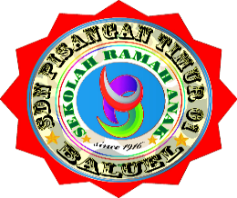

Logo Gagal DimuatPemerintah Provinsi DKI Jakarta
Jl. Pisangan Lama I/38, Kel. Pisangan Timur, Kec. Pulogadung, Kota Adm. Jakarta Timur
"Anak-anakku yang Ibu sayangi dan Ibu Banggakan,
Enam tahun sudah kita merajut cerita, belajar, dan bertumbuh bersama di SDN Pisangan Timur
01. Hari ini adalah gerbang awal menuju petualangan baru di jenjang yang lebih tinggi.
Apapun hasil yang tertulis hari ini, kalian tetaplah bintang kebanggaan kami. Teruslah
melangkah dengan semangat, raihlah cita-cita setinggi mungkin, dan jangan pernah takut untuk
bermimpi."
Anna Samosir S.Pd.SD.M.Si
Masukkan Nomor Peserta atau Nama Lengkap Anda
Sedang memverifikasi data kelulusan...